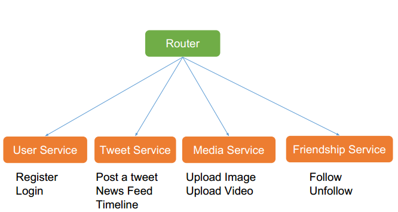
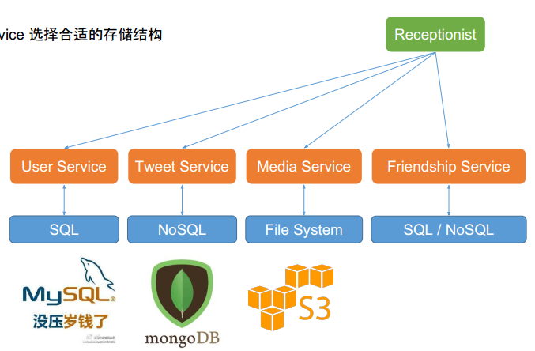
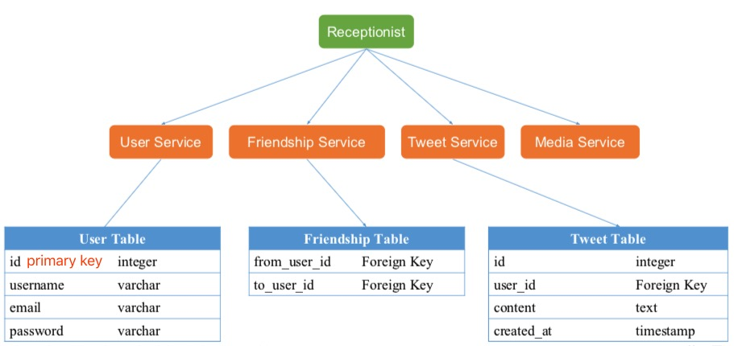
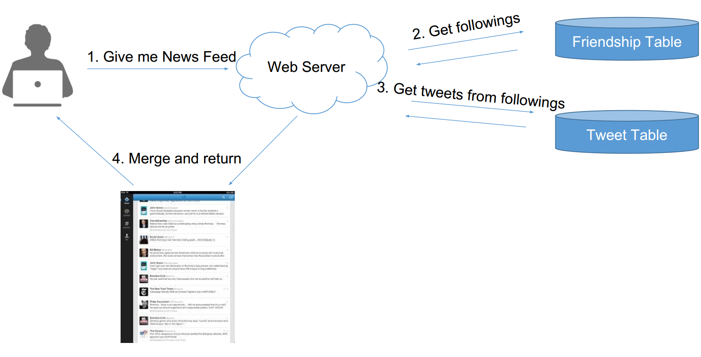
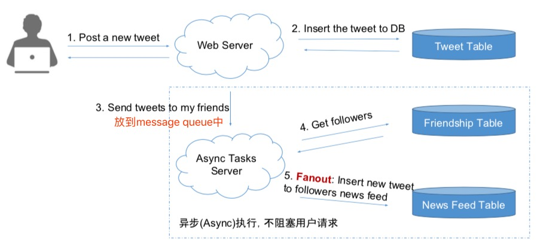
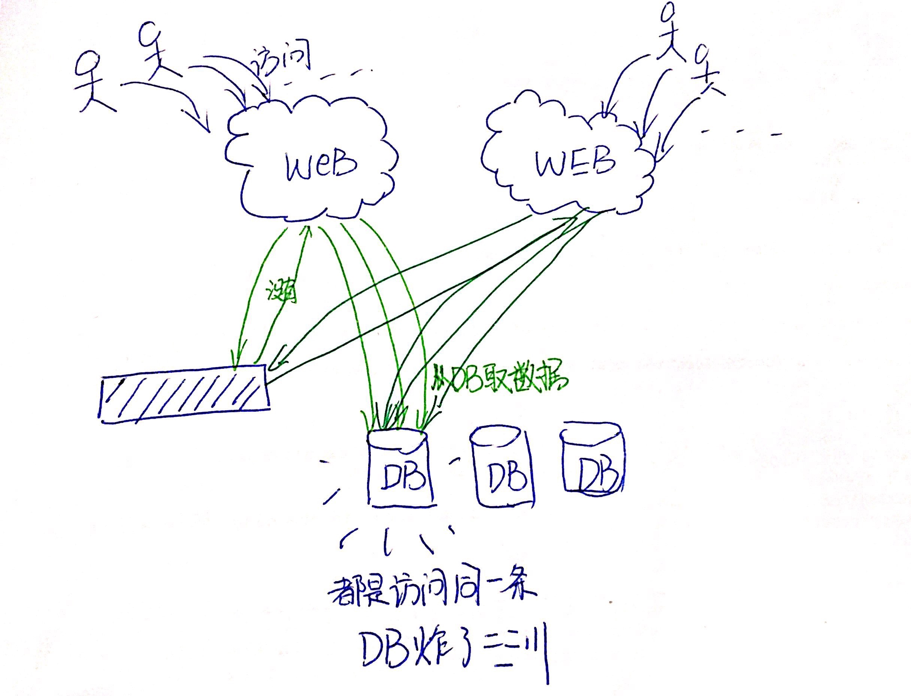
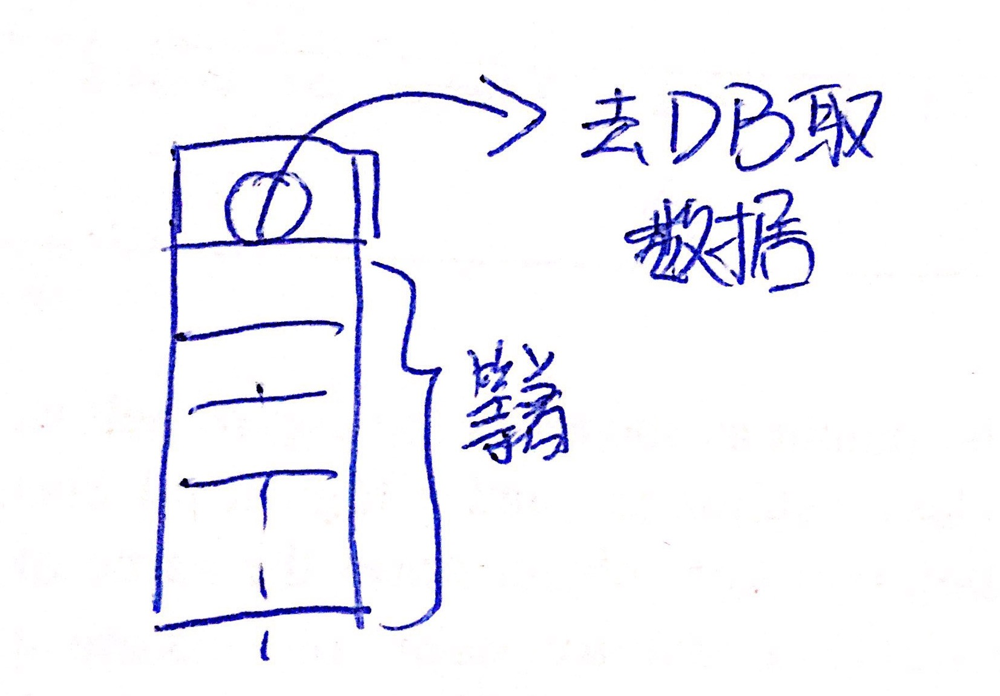
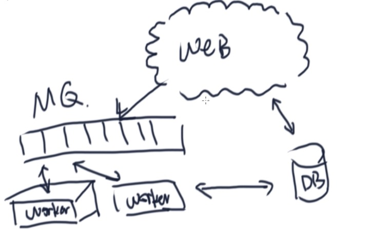
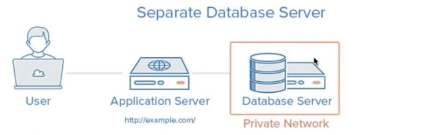

系统设计面试是常见的一种面试类型，特别是针对后端工程师，全栈工程师是必须的面试环节。
需要面试系统设计的情况如下：
- 刚毕业的学生
- 已经有工作经验的工程师
- 面试全栈工程师
- 面试后端工程师
- 面试系统架构师
现在的系统设计大部分时候面试的内容都是与 Web 开发相关的知识，因为大部分的公司都需要 Web Backend Engineer。因此只要面试和后端有关的职位，都有可能会面到系统设计，无论是刚毕业的学生还是已经有工作经验的工程师。特别的，机器学习（ML）相关的职位会面与机器学习有关的设计问题，一般不会面系统设计。Manager 相关的岗位也不会面系统设计。实习生很少很少很少会面系统设计，一般两轮算法题就OK了。Data 相关的职位一般也不会面试系统设计。
- 系统设计面试的两种形式 及 常见的系统设计面试问题： ➔ (题目都是比较短小)
- 设计某某系统 Design XXX System
- 设计微博 Design Twitter
- 设计人人 Design Facebook
- 设计滴滴 Design Uber
- 设计微信 Design Whatsapp
- 设计点评 Design Yelp
- 设计短网址系统 Design Tiny URL
- 设计NoSQL数据库 Design NoSQL
- 设计某某系统中的某某功能
- 设计一个功能实现对用户访问频率的限制
- 设计一个功能实现统计某个具体事件的历史发生次数 (如Facebook的点赞，有读有写，可以监控整个系统健康程度)
- 设计删除一个 Tweet 的功能
- 设计邮件系统中将所有邮件标记为已读的功能
- 找问题
- 网站挂了怎么办
- 网站太慢怎么办
- 流量增长怎么办
- 设计某某系统 Design XXX System
- 系统设计和面向对象设计的对比：
- 系统设计是宏观设计，通常考察的是系统的架构能力，工作经验，一般都是以聊天的形式为主。通过聊天来了解你知不知道这个，懂不懂那个。
- 考察的知识点：Database, Schema, SQL, NoSQL, Memcached, File System, Distributed System, Latency, Scalbility, Master Slave, Load Balancer, Web Server, Message Queue, Sharding, Consistent Hashing, QPS …
- 典型题：短网址系统设计，新鲜事系统设计
- 面向对象设计是微观设计。通常是让你实现一些非常具体的功能，你需要用面向对象编程实现一个类（Class）以及定义在这个类上个方法（method）。通常一半时间聊天，一半时间写代码。
- 考察的知识点：Class, Object, Method, Inheritance, Interface … （考虑PC端, frontend design）
- 典型题：电梯设计，游戏设计
- 系统设计是宏观设计，通常考察的是系统的架构能力，工作经验，一般都是以聊天的形式为主。通过聊天来了解你知不知道这个，懂不懂那个。
设计新鲜事系统(News Feed) ➔ 类似微博、朋友圈、Twitter、Facebook的系统：
- 什么是新鲜事 News Feed：
- 你登陆 Facebook / Twitter / 朋友圈 之后看到的信息流
- 你的所有朋友发的信息的集合
核心因素：
- 关注与被关注
- 每个人看到的新鲜事都是不同的
系统设计面试评分标准：
- 可行解 Work Solution 25%
- 特定问题 Special Case 20%
- 分析能力 Analysis 25%
- 权衡 Tradeoff 15%
- 知识储备 Knowledge Base 15%
系统设计： 4S分析法
- Scenario 场景
- 需要设计哪些功能、到哪个程度
- 询问： Features / QPS / DAU / Interfaces
- Service 服务
- 将大系统拆分为小服务
- 拆分、Application、模块化
- Storage 存储（比较核心的部分）
- 数据如何存储与访问
- Schema/Data/SQL/NoSQL/File System
- Scale 升级
- 解决缺陷，处理可能遇到的问题
- Sharding/ Optimize / Special Case
通过Scenario，Service， Storage后可以得到了Work Solution但不一定是Perfect Solution。
通过Scale可以优化系统。
系统设计按照这个思路去思考，去准备，去设计， 使得面试过程中有章法有套路。
设计Twitter为例子
场景
场景连问
- 需要设计哪些功能？
- 需要承受多大访问量？
- DAU - 150M+ (日活跃用户 - DAU - Daily Active User)
- MAU 313M
- （估算：MAU ≈ DAU / 2）
- MAU 衡量网站用户数的重要指标：用户量大，读写自然就大了
功能设计
- 枚举功能： 把Twitter的功能一个个罗列出来
- 注册、登录
- 用户个人主页
- 发、分享微博
- 上传图片、视频
- 搜索
- 时间线、信息流 ➔ timeline, news feed
- 关注、取关
- 对功能排序： 选出核心功能，因为你不可能这么短的时间什么都设计
- Post a Tweet
- Timeline
- News Feed
- Follow / Unfollow a user
- Register / Login
分析&预测
- 并发用户：
- 日活跃*每个用户平均请求次数/一天多少秒 = … = 100k
- 峰值 Peak = Average Concurrent User * 3 ~ 300k
- 快速增长的产品 —— MAX peak users in 3 mouth = Peak users * 2
- 通过DAU, MAU估算出QPS
- 读频率 —— Read QPS (Queries Per Second)
- 300k
- 写频率 —— Write QPS
- 5K
分析出QPS有什么用？
- QPS = 100
- 笔记本做Web服务器就可以
- QPS = 1K
- 好点的Web服务器就行
- 需要考虑Single Point Failure（万一某服务挂了）
- QPS = 1M
- 考虑建设一个1000台的Web服务器集群
- 需要考虑维护问题（万一一台挂了）
- QPS和Web Server(服务器) / Database(数据库) 之间的关系
- QPS和 Web Server (服务器) / Database (数据库)
- (Apache 和 Nginx 的吞吐量都有几十万，是按照有很牛的机器做比较简单的操作。普通机器QPS能达10算好了…)
- 一台Web Server（企业级）承受量大约为1k的QPS (考虑到逻辑处理时间以及数据库查询的瓶颈)
- 一台SQL Database 承受量是1k的QPS (如果JOIN和INDEX 请求比较多，这个值会更小)
- 一台NoSQL Database (Cassandra) 约承受量是10k的QPS
- 一台NoSQL Database (内存cache型的, Memchached) 约承受量是1M的QPS
服务
将大系统拆分为小服务： ➔ 微服务
- Replay： 重新过一遍每个需求，为每个需求添加一个服务
- Merge： 归并相同的服务
什么是服务 Service?
- 可以认为是逻辑处理的整合
- 对于同一类问题的逻辑处理归并在一个 Service 中
- 把整个 System 细分为若干个小的 Service
服务拆解的例子

Router： 通常是在 Web Framework 中负责根据 url 的不同的路径，将用户的请求分配给不同的 service 去处理的这么一个路由函数。如看到 /users/ 开头的 url 就丢给 UserService，看到 /tweets/ 开头的就丢 TweetService。
※ 存储
存储 ➔ 最重要
数据如何存储与访问：
- Select： 为每个 Application / Service 选择合适的存储结构
- Schema： 细化数据表结构
数据如何存储与访问
- 数据库系统 Database
- 关系型数据库 SQL Database
- 用户信息 User Table
- 非关系型数据库 NoSQL Database
- 推文 Tweets
- 社交图谱 Social Graph (followers)
- 关系型数据库 SQL Database
- 文件系统 File System
- 图片、视频 Media File
- 缓存系统 Cache ➔ (通常配合数据库使用)
- 不支持数据持久化 Nonpersistent
- 效率高，内存级访问速度
可以说：
- 程序 = 算法 + 数据结构
- 系统 = 服务 + 数据存储
例子，也就是可以按照如下图所示设计Twitter的数据存储：

细化Twitter的数据表结构：

信息流(News Feed)如何存取
Pull模型：读扩散
Pull模型：用户查看news feed时，获取每个好友前100条微博，合并出前100条
- 主动读取：用户需要的时候再算
- K路归并算法：(时间复杂度为O(nlogk))
- 使用堆
- 每两两个链表合并，自下而上
- 类似归并排序，自上而下
- 时间复杂度：
- News Feed ➔ 假如有N个关注对象，则复杂度 = N次DB Reads的时间（O(100N)） + K路归并时间（可忽略，由于数据获取是瓶颈）
- Post a tweet ➔ 1次DB Write的时间
- Read的慢是用户可感知的
Pull模型原理如下：
- 用户发送请求消息
- 获取关注列表
- 获取关注列表的前100条Tweets
- merge之后返回

Pull模型的缺陷：N次DB Reads非常慢 且发生在用户获得News Feed的请求过程中， Read的慢是用户可感知的慢
Push模型：写扩散
Push模型：
- 一个News Feed Table存储所有用户的News Feed
- 为每个用户建一个List存储他的News Feed信息(虚拟的list，从表中根据ower_id filter出list)
- 用户发一个Tweet之后，将该推文逐个推送到每个用户的News Feed List中(关键词:Fanout)
- 用户需要查看News Feed时，只需要从该News Feed List中读取最新的100条即可 (可放入cache中)
- “Disk is cheap”，不要怕浪费数据库存储，为了加速查询，多存一些东西是没关系的。
复杂度分析：
- News feed => 1次DB Read
- 在 Needs Feed Table 可以建 composite index
- Post a tweet => N个粉丝，需要N次DB Writes
- 用户只需要知道有没有发成功
- 好处是Fanout过程可以用异步任务在后台执行，无需用户等待
Push模型原理如下：
- 用户发布一个新的tweet
- 把tweet写入数据库
- 同时把新的tweet更新到好友的信息流中，新建一个异步任务，放入message queue
- 获得粉丝列表
- Fanout：把新的tweet写入到粉丝的news feed中

Push模型的缺陷：
- 不及时。粉丝数目可能很大，导致 Fanout 过程很长，从而导致用户刷到新鲜事有延迟。
- 浪费系统资源去为很多僵尸粉创建新鲜事记录。
- 明星发帖会在短时间内为系统带来很大的处理压力。
Poll vs Push
大厂大部分都是 Pull 或者 Pull + Push 因为要考虑明星的问题，小厂一般直接 Push，因为代码简单，容易维护。如果没有明星问题的产品，如朋友圈，也可以用 Push，因为不会有明星问题。
使用Poll 和 Push 都可以，遇到问题可以尝试优化。
热门Social App的模型：
- Facebook – Pull
- Instagram – Push + Pull
- Twitter – Pull
误区：
1）不坚定想法，摇摆不定；
2）不能表现出Tradeoff的能力
3）无法解决特定的问题
扩展
通过前三步可以得到一个 Work Solution 而不是 Perfect Solution， 这个Work Solution 可以存在很多待解决的缺陷， 故可以使用Scale来优化和维护
Optimize：如何优化系统
- 解决设计缺陷
- Pull vs Push, Normalize vs De-normalize
- 更多功能设计
- Like, Follow & Unfollow, Ads
- 一些特殊用例
- 明星用户的精群效应，僵尸粉
解决Pull的缺陷
由于最慢的部分发生在用户读请求时，那么可以:
- 在DB访问之前加入Cache，常用会使用memcached，相当于是数据库的cache
- Cache每个用户的timeline：
- N次DB请求 ➔ N次Cache请求 (N是你关注的好友个数), 从数据库中读取改为从Cache中读取，而数据库的读取速度和Cache的读取速度的差是100～1000倍
- Trade off: 可以只考虑最近的1000条之类的（其实200条也可以了），不要太浪费内存
- Cache每个用户的News feed：
- 没有Cache News Feed的用户：归并N个用户最近的100条tweets，然后取出结果的前100条。不是时时有新的更新。
- 有Cache News Feed的用户：归并N个用户在某个时间戳之后的所有tweets
解决Push缺陷
- 浪费Disk空间
- 但其实没啥, Disk is cheap
- 不活跃用户
- 粉丝排序。但也没啥作用
- 大量粉丝问题，无解。因此可以尝试在现有的模型下进行优化(加几个机器)。还可以对长期增长进行估计，并评估是否值得转化整个模型。
- 做个trade off: Pull + Push vs Pull
Push 结合 Pull 的优化方案
算法过程：
- 普通的用户仍然 Push
- 将 Lady Gaga 这类的用户，标记为明星用户
- 对于明星用户，不 Push 到用户的 News Feed 中
- 当用户需要的时候，来明星用户的 Timeline 里取，并合并到 News Feed 里
明星用户： 是不是明星不能在线动态计算，要离线计算（为 User 增加一个 is_superstar 的属性）
Pull vs Push
为什么既然大家都用Pull，我们仍然要学习Push?
- 系统设计不是选择一个最好的方案
- 而是选择一个最合适的方案
- 如果你没有很大的流量，Push是最经济最省力的做法
什么时候用 Push?
- 资源少
- 想偷懒，少写代码
- 实时性要求不高
- 用户发帖比较少
- 双向好友关系，没有明星问题(比如朋友圈)
什么时候用 Pull ?
- 资源充足
- 实时性要求高
- 用户发帖很多
- 单向好友关系，有明星问题
- (如Facebook，有复杂的要求时)
Maintenance
- 鲁棒性 Robust
- 如果有一台服务器/数据库挂了怎么办
- 扩展性 Scalability
- 如果有流量暴增，如何扩展
其解决方案见下一节。
总结
- 4S分析法： 不是面试过程中每一个步骤都要踩到，要心里有谱，如果面试官给的问题比较虚无缥缈时，可以考虑一下，如果有具体的问题，非常清晰的场景，就可以按照这个来回答。
- Ask before design：问清楚再动手设计 不要一上来就冲着一个巨牛的方案去设计，切忌不要做关键词大师。
- No more no less：不要总想着设计最牛的系统 要设计够用的系统
- Analysis is important than solution：系统设计没有标准答案，记住答案是没用的，通过分析过程展示知识储备，权衡各种设计方式的利弊。
拓展
Q1：关注和取关
- Follow & Unfollow：无论使用什么模型，都需要在数据库中创建/删除记录
- 对于Push model：
- Follow 一个用户之后，异步地将他的 Timeline 合并到你的 News Feed 中
- Unfollow 一个用户之后，异步地将他发的 Tweets 从你的 News Feed 中移除
- 需要异步 Async 的原因：
- 因为这个过程一点都不快呀，(有很多的数据)
- 异步的好处：
- 用户迅速得到反馈，似乎马上就 follow / unfollow 成功了
- 异步的坏处：
- Unfollow 之后刷新 News Feed，发现好像他的信息还在， 有延迟
- 不过最终还是会被删掉的
Q2：如何存储likes
如何在 News Feed 中同时得到每个帖子被点赞、评论和转发的次数？ 有两种方法：Normalize 和 Denormalize
Normalize 获得点赞数的方式:
1
SELECT COUNT * FROM like_table where tweet_id=xxx;
优点:标准化，最准确。
缺点:炒鸡慢，会增加 O(N) 个 SQL Queries(对于某一页的 Tweets，每个都得来这么一句查询)Denormalize 获得点赞数的方式:
Denormalize 是在 Like Table 中也还是继续新增一条记录，并且 update TweetTable 里的like_count。 （对于关注和取关的问题，也是有记录他的粉丝人数和关注的人数也是使用de-normalize记录）当有人点赞的时候:
1
UPDATE like_table SET num_of_likes = num_of_likes + 1 where tweet_id = xxx
当有人取消赞的时候:
1
UPDATE like_table SET num_of_likes = num_of_likes - 1 where tweet_id = xxx
想要获得一个 Tweet 的点赞数时，因为 num_of_likes 就存在 tweet 里，故无需额外的 SQL Queries
时间复杂度为O(1)，虽然记录了冗余信息，但是使用了空间换取了时间
Q3：惊群现象
惊群现象(Thundering Herd)：对于同一条数据短时间出现大量的请求。因为访问的是同一个数据，sharding 机制无论如何都会 sharding 到同一个机器上。此时 sharding 不能做到分摊流量的作用。➔数据库承受不住压力

我们通常会使用缓存来作为数据库的“挡箭牌”，优化一些经常读取的数据的访问速度。即，在访问这些数 据时，会先看看是否在缓存中，如果在，就直接读取缓存中的数据，如果不在，就从数据库中读取之后，写入缓存并返回。
那么在高并发的情况下，如果一条非常热的数据，因为缓存过期或者被淘汰算法淘汰等原因，被踢出缓存之后，会导致短时间内(<1s)，大量的数据请求会出现缓存穿透 (Cache miss)，因为数据从 DB 回填到 Cache 需要时间。从而这些请求都会去访问数据库，导致数据库处理不过来而崩溃，从而影响到其他数据的访问而导致整个网站崩溃。
解决办法及参考资料：
- Memcache Lease Get - 《Scaling Memcache at Facebook》
给普通的memcache增加lease get功能：对于读取同一条数据，只有第一个请求去访问数据库，把数据从DB中取出，然后回填到cache； 其他请求都在等着。
（取肉夹馍例子）  - Redis 防雪崩架构设计
常见QA
Cache
- Cache是一个相对概念
- 可以是在内存中
- 可以是在磁盘上
- 可以是在CPU里（L1 Cache / L2 Cache)
- 可以是在服务器端
- 可以是在客户端（如浏览器cache）
- 在浏览器中访问某个网页时，第一次比较慢，再访问一次后会比较快，因为浏览器会把一些图片等文件cache在浏览器中
- 内存中的 Cache 可以理解为一个 Hash Table，是一种 key-value 的结构
- 常用的Cache工具/服务器有：Memcached，Redis
- 我们通常把经常访问的数据放在Cache里来加速访问速度， （访问内存比访问数据库快很多）
- Cache 因为空间受限制，因此需要淘汰掉一些不常用的数据
- 常见的淘汰算法有LRU（Least Recently Used）是算法面试中常见的考点
- 为什么不全放Cache里?
- 内存中的数据断电就会丢失
- Cache 比硬盘贵
消息队列
- 消息队列是什么
- 消息队列是 进程间通信 或 同一进程的不同线程间的通信方式
- 简单的说就是一个先进先出的任务队列列表，队列里放的是任务信息(PID之类)
- 做任务的worker进程共享同一个列表 (worker监听消息队列，一旦有新的任务就取下来然后执行，执行结果一般不是通过消息队列返回，而是可以通过把结果写入到数据库中，web server通过时不时看一下数据库或者通过用户刷新来读取任务执行情况，通过这样的方式来完成web server和数据库之间协同工作)
- Workers从列表中获得任务去做，做完之后反馈给队列服务器
- 队列服务器是做异步任务必须有的组成部分 
- 什么时候使用消息队列
- “生产者消费者”模型 里面使用到的queue, 这个queue起到了缓冲的作用
- 需要缓冲的原因：处理消息和发送消息（产生消息）的速率不一致
- 例子：(下单网购和送快递)，OJ交代码和评测机评测，发激活邮件(使用第三方API，由于和远程机器通信故速度慢，且如果失败了会重新发送)，12306订票
- 使用场景：
- 任务执行比较慢
- 使用重试机制
- 用户愿意去等待(如使用Push模型时关注/取关一个用户)
- 哪些工具可以做消息队列
- 最常用的有 RabbitMQ, Redis, AWS SQS, ZeroMQ, Kafk
- 其他机制(optional)：
- 两个worker同时工作时，不会取到一样的任务去执行
- 镜像机制（double master）
- 有些任务是有优先级（里面有子queue）
NewsFeed 如何实现 Pagination?
问：是不是不管push还是pull模型，如果翻页的话都得pull?
翻页是用户主动操作的过程，所以肯定是由client 发给 server，肯定是一个pull的过程。
问：假设前100条中最早的timestamp是T，就分别请求follow的人在T之前的100条feed，然后再进行合并？
答：对
问：如果恰好有几条feed的timestamp一样该如何处理？
答：首先不会有帖子的timestamp一样，timestamp的精度很高的（微秒级别）
通常来说，翻页这个完全可以作为一道单独的系统设计面试题来问你。翻页并不是简单的1-100，101-200这样去翻页。因为当你在翻页的时候，你的news feed可能已经添加了新的 内容，这个时候你再去索引最新的101-200可能和你的1-100就有重叠了。
通常的做法是，拿第101个帖子的timestamp作为下一页的起始位置，也就是说，当用户在看到第一页的前100个帖子的时候，他还有第101个帖子的timestamp信息（隐藏在你看不到的地方），然后你请求下一页的时候，会带上这个timestamp的信息，server端会去数据库里请求 >= timestamp 的前101个帖子，然后也同样把第101个帖子作为下一页的timestamp。这个方法比直接用第100个帖子的timestamp好的地方是，你如果读不到第101个帖子，说明没有下一页了，如果你刚才只有100个帖子的话，用第100个帖子的timestamp的坏处是，你会有一次空翻。
Web服务器 Web Server
- 在浏览器输入网址后，这个请求到达的网站提供方那边的一台或者若干台机器。这（些）机器提供HTTP/HTTPS服务。
- HTTP/HTTPS 是叫 超文本协议， 主要用于网页浏览器(Web Browser)和网站服务器(Web Server)之间沟通的协议
- 协议 == 约定好的沟通说话方式 == 传输数据的格式
- 一台性能好的Web Server大概每秒可以服务1k次访问请求 (粗略的预估) (企业级)
- (自己搭建的服务器每秒能服务10台就不错啦)
- (要考虑查询是否复杂)
- (server有多少个cpu…, 企业的服务器比较好…)
- Web Server有时候也叫 Application Server
1个request -> 返回1个response (有点像函数调用)
数据库
- 存储数据的仓库（数据比如，用户信息，用户发的帖子等）
- 数据库是内网中才能访问的，一般不会对公网提供发问权限 (为了安全性)
- 数据库一般和Web Server打交道
- 数据库支持对数据的增删查改，且提供丰富的查询接口
- 如查询所有2018年入学的算法成绩 < 60 分的同学信息
- 一个合理的架构中，Web Server 和 Database Server 是两台不同的机器 （一旦有东西出错了，可以方便的定位到是什么出错了；否则放在一起会相互影响，出错了后很难debug）
- 数据库适合存储结构化数据（Structured Data) -> （能够写成一个class，里面对应的一些attributes）
- 常见的软件是MySQL

文件系统 File System
- 操作系统的组成部分之一
- 一般是目录结构，（访问文件系统需要提供文件目录地址）
- 数据库系统是基于文件系统而存在的，（数据库系统无法单独存在，数据库的数据最终还是写在文件系统中的一个一个文件里，只不过这些文件怎么组织，格式是什么，我们无需关心，数据库系统会处理好，我们只需要关心数据库的表是什么，里面有什么属性）
- 文件系统的接口比较单一
- 读某个文件从某个位置开始的多少字节的数据
- 在某个文件的某个位置起写入多少字节的数据
- （不符合复杂查询需求，所以数据库系统对文件系统进行封装，提供接口给用户使用）
- 断电之后数据依然存在 -> 持久化
- 非机构化的数据适合直接存储在文件系统中
- 如 .avi, .jpg （直接是文件）（如果需要查询文件里面的东西，需要构建新的查询系统专门服务这个查询）
主键和外键
主键(Primary Key): 用于唯一和完整标记这条数据的数据列或属性的集合。（ e.g., user_id）一个数据表只能有一个主键，且不能缺失，也不能为空。
(SQL型数据库通常不用自己定义主键，因为它默认每个表都带id, 且id是线性增长)
(NoSQL型数据库主键不是一个整数，而是一个哈希码字符串，为了可以支持分布式数据库，同时各自创建新的数据，而不用依赖一个结构去创建ID)
外键(Foreign Key): 在新的表中，用某个表的主键表示那个表的信息，不需要存冗余信息，（有点像存了reference）
id会由于数据太大 而溢出， 所以现在 id 一般要用 Bigint（64位）才不会担心溢出。
数据库索引
- Index是什么
- 类比书的目录 -> 快速查询
- 有序性
- 为什么需要Index
- 可以对数据库表单的任何一项建立索引，用来加速这一项的查询
- 相当于数据库建了个专门存index的表， 这个index表按照一定顺序很快地查询到待查值所在的位置
- 加速这两类查询：某个个column等于某个值， 某个column在某个范围（range query）
- 没有index只能用for循环 -> 超级慢
- index的原因
- 文件上的“有序”列表
- 传统的关系型数据库一般采用 B+ Tree 做为Index的数据结构
- B+树是一棵“排序”多叉树，类似排序二叉树（Binary Search Tree）
- 通过“多叉”减少树的高度，减少磁盘寻道（Disk Seek）次数
- 怎么建index & 常用的几类index
- （建索引语法可以显查）
- 普通索引
- 唯一索引（Unique Index）如Primary Key自带的索引，有唯一性。例子User Table 中的Username，Email
- 联合索引（Composite Index）涉及到两个或多个column的查询，需要建联合索引
- 条件索引（Condition Index）只对满足条件的数据建索引，查询也是对满足条件的数据做查询